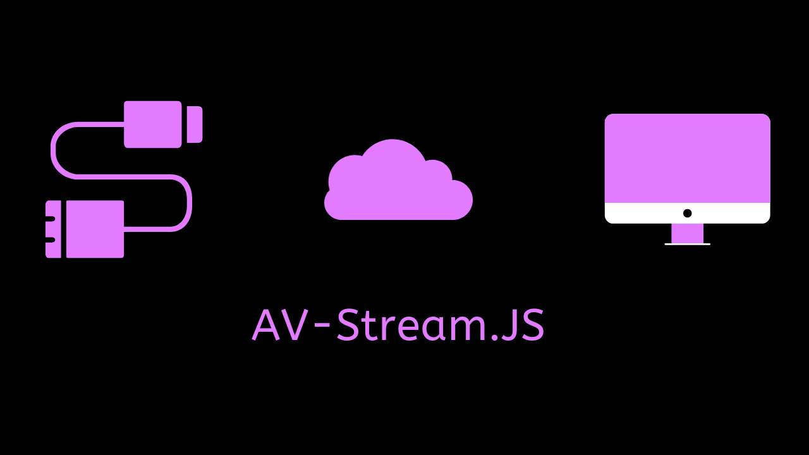

Audio-Video-Stream.js

A small 500 byte JavaScript library leveraging the native MediaRecorder API to allow streaming of audio or video files to server.
It works by looping the MediaRecorder every x milliseconds, which can be used to generate and stream a file at every loop step.
Usage
Including script in browser :
<script src="https://unpkg.com/avstream.js/avstream.min.js"></script>
To use functions in your JS file :
const { startStream, stopStream } = AVStream
Functions
startStream(mediaRecorder,time)
startStream takes your mediaRecorder variable, and time in milliseconds. The MediaRecorder is restarted according to the time you provide.
This causes mediaRecorder.onStop() to be called every time milliseconds. So, you can write your blob creation and server call in that function.
stopStream()
stopStream stops the stream.
Tutorial
// Record & Stop buttons of your HTML
const record = document.querySelector('#recordbutton')
const stop = document.querySelector('#stopbutton')
// Importing necessary variables
const { MediaRecorder, Blob } = window
const {startStream,stopStream} = AVStream
// Checking if browser allows getUsermedia
if (navigator.mediaDevices.getUserMedia) {
console.log('getUserMedia supported.')
// Setting constraints for MediaRecorder
const constraints = { audio: true, video: false }
// Declare chunks for our blob
let chunks = [];
const onSuccess = (stream) => {
// Creating a MediaRecorder object
const mediaRecorder = new MediaRecorder(stream)
// if record button clicked, call startstream
// with our mediarecorder object and a 1000ms loop
record.onclick = () => {
startStream(mediaRecorder,1000)
console.log(mediaRecorder.state)
console.log('recorder started')
}
// stop stream if stop button clicked
stop.onclick = () => {
stopStream()
console.log(mediaRecorder.state)
console.log('recorder stopped')
}
// Blob created and streamed to server
// Looped according to time we specify
mediaRecorder.onstop = () => {
console.log('data available after MediaRecorder.stop() called.')
// Create file from chunks
const blob = new Blob(chunks, { 'type' : 'audio/wav' })
// Write code to send blob to server here
// Clear chunks for new file
chunks = [];
}
// Push chunks when data is available
mediaRecorder.ondataavailable = e => chunks.push(e.data);
}
// Promise call to start our code
navigator.mediaDevices.getUserMedia(constraints).then(onSuccess).catch((err)=>{console.error(err)})
} else {
console.error('getUserMedia not supported on your browser!')
}
License
The MIT License (MIT)